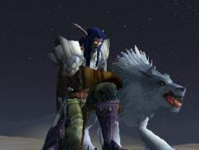

Joué par :
Lethiel Joué par :
[ Information masquée ] Age : 2500
Lieu de naisance : Ashenvale
Signe de naissance : Faucon
Sexe : Homme
Race : Elfe
Faction : Alliance
Formation : Chasseur
Niveau : 49
Guilde : Artisanat 1 : Dépeceur
Informations hrp : Lethiel est un elfe peu communicatif et solitaire qui apprécie le calme des forêts.
Lors de ses voyages, il ne se sépare jamais de son loup Fenrir avec qui il partage un indestructible lien fraternel.
Description : Ayant perdu un être cher durant la guerre contre la Légion Ardente, Lethiel s'est replié sur lui même et s'est mis à rechercher sans arrêt la soltitude.
Lorsqu'il rencontre Fenrir, son loup, c'est le début d'une longue et profonde amitié qui allégera grandement son fardeau...
Ère du Renouveau [18]
Lune de la Force [1]
Décade du Panda
Décade du Gorille
Décade de l'Ours [1]
Premier jour depuis l'Eveil...
Voici donc le premier jour que je reprends l'écriture de ce journal depuis que Shando Stormrage a éveillé les druides. Depuis la défaite de la Légion Ardente, depuis que j'ai tout perdu...
Pourquoi l'avoir reprise ? Je l'ignore. Peut-être est-ce l'envie de coucher mes tourments sur le papier ? Ou de les extérioriser afin que, par ce fait, ma peine soit moins grande ?
Il fut de nombreuses saisons où moi et mes frères étions immortels. Ces années étaient bénies car le temps n'avait aucune importance.
J'aimais une femme... En parler m'est difficile mais je sais que je le dois.
Cette femme était la plus belle, la plus douce et la plus sage des chasseresses d'Ashenvale.
Elle se nommait Adalanë...
Moi qui ne jurais que par le fer de l'épée et le bois du bouclier, elle m'enseigna les secrets de la Nature, les leçons que l'on tire des animaux, le goût des choses simples et de la solitude.
Il y a quatre ans, lorsqu'elle périt en affrontant Archimonde et ses séides, je fus frappé par la douleur, à laquelle s'ajouta un grand besoin de solitude.
La Légion était certes disloquée, mais mon bouclier n'avait pu la protéger de nos ennemis.
Longtemps j'errais seul et sans but dans les forêts dévastées d'Ashenvale jusqu'à ce qu'un prêtre d'Elune m'apporte un peu de réconfort et me pousse à voyager jusqu'à Teldrassil, le nouvel Arbre Monde.
Une fois sur place, je décidais de suivre la voie que suivait Adalanë afin que peut-être, ma douleur finisse par s'estomper au contact de la Nature
A présent, puisse Elune me sourire.
Lune d'Agilité [9]
Décade du Tigre [5]
Deuxième jour depuis l'Eveil...
J'ai croisé un groupe d'humains dans les rues de Darnassus aujourd'hui. Il y a longtemps que je n'en avais vu. Et, bien que nos alliés, ils demeurent pour moi, ainsi que les nains et les gnomes, des gens curieux et excentriques. Des gens auxquels je n'aime pas me mêler.
Malheureusement, il semble que je vais y être obligé. Jocaste, la maîtresse des chasseurs de Darnassus, a jugé qu'il serait bon pour moi, à présent que j'en sais suffisamment sur mes nouvelles capacités, que je quitte Teldrassil et me mette en quête d'un compagnon animal.
Il s'agit apparemment d'un rite de passage auquel tout chasseur se doit de participer.
Un compagnon m'apportera-t-il le réconfort ?
Troisième jour depuis l'Eveil...
J'ai décidé de partir pour Stormwind car l'on m'a apprit qu'il y a là un maître d'armes capable de m'en apprendre davantage sur le maniement de l'épée.
Le voyage à dos d'hippogryphe m'a ramené dans les forêts d'Ashenvale. Des forêts emplies de souvenirs
J'ai décidé de ne pas m'y attarder. Je prends dés ce soir le bateau pour les terres d'Azeroth.
Bien que le voyage s'est passé sans encombre et dans une morosité générale, je suis finalement parvenu au port de Menethil.
L'un des dockers m'a apprit qu'il me restait encore une longue route à parcourir avant d'arriver à Stormwind. Qu'il me fallait traverser une lande quasi déserte et infestée de monstres, puis passer sous les montagnes, par Dun Algaz, afin d'atteindre Dun Morogh et Ironforge, la capitale naine.
Cela me permettra peut-être de découvrir mon compagnon animal...
Quatrième jour depuis l'Eveil...
Je ne comprends pas quel plaisir les nains peuvent avoir de vivre dans des montagnes si froides.
Ironforge est sans conteste une ville impressionnante. Elle mêle la roche et la technologie des gnomes et est puissamment protégée.
Je pense demeurer un moment. La neige et le froid me donne une impression de solitude que j'aimerais éprouver en explorant les montagnes les plus proches.
Je l'ai finalement trouvé... Mon compagnon animal...
Alors que je découvrais les montagnes, j'ai rencontré un loup au pelage blanc qui luttait seul contre un ours de taille impressionnante.
J'ai bandé mon arc et achevé l'ours. Je voulais en faire de même avec le loup, mais le regard qu'il m'a jeté retint mon geste.
Et là, j'ai capté sa pensée :
Bats-toi. J'ignore comment une telle chose a pu se produire, mais, après tout, je n'ai que 230 ans, je suis loin d'avoir tout connu.
Les autres chasseurs disposent-ils de la même capacité ?
Aussi étrange que sa pensée m'était parvenue, je lui transmis la mienne avec autant de facilité.
Je ne voulais pas me battre.
Il s'est alors lentement approché de moi et m'a regardé, comme s'il sondait mon âme d'une quelque façon.
Tu es seul. Je ne répondis pas.
Tu es seul. Insista-t-il et je finis par acquiescer.
Je voulu ensuite m'en aller mais il se mit à trottiner derrière moi.
Je lui demandais pourquoi il me suivait, et il me répondit alors :
Je suis sans meute, tout comme toi. Nous n'échangeâmes pas plus de mots ensuite et nous regagnâmes l'auberge d'Ironforge aussi naturellement que si nous avions été des compagnons de toujours.
Cinquième jour depuis l'Eveil...
Cinquième jour depuis l'Eveil...
Fenrir, car c'est comme cela qu'il s'appelle, n'appréciant pas la ville naine, nous n'y sommes pas demeuré plus longtemps et c'est contraint qu'il a emprunté le "métro" afin que nous nous rendions à Stormwind. Je dois dire que je partageais son sentiment.
Les gnomes finiront par causer leur perte avec toutes ces machines qui vont à l'encontre de la Nature.
Stormwind est une ville majestueuse et débordante d'activité. Fenrir ne s'y sent pas à l'aise, tout comme moi, mais je me contiens mieux que lui. Du moins, je m'y efforce.
Je vais me mettre à la recherche de Woo Ping, le maître d'armes, dés que possible. Je pense rester un moment dans la région car elle me semble intéressante à explorer.
En outre cela me permettra de chasser et de dégourdir les pattes de mon loup.
Décade du Singe [1]
Septième jour depuis l'Eveil...
Bien que la Légion Ardente ait été repoussée, des lambeaux de ses serviteurs demeurent au cur même d'Ashenvale. Ceux que l'on nomme Réprouvés et qui se disent libérés de leurs anciens maîtres.
Nous les avons vu, d'infâmes morts-vivants fouiller les ruines à la recherche d'Elune sait quoi.
Nous avons abattu tout ceux que nous avons rencontrés, mais je ne doute pas qu'il en reste encore, quelque part.
Voilà quelque chose d'écoeurant. Des morts qui s'accroche si obstinément à la vie. Ou peut-être est-ce la puissance disloquée de la Légion qui les maintiens conscient ?
Je l'ignore. Mais ce que je sais c'est qu'ils ne méritent aucune pitié pour tout ce qu'ils ont fait par le passé et continue de faire.
Durant notre chasse, j'ai mille fois craint de retrouver Adalanë parmi eux même si je sais pertinemment qu'elle a été inhumée selon les rites des sentinelles d'Elune.
Elle me manque tellement
Je maîtrise un peu mieux le combat à deux armes mais il va me falloir encore m'entraîner.
Alors que je déambulais seul, Fenrir ayant préféré partir à la chasse, dans les rues de Darnassus, j'ai rencontré une druidesse du nom de Duvnarel et c'est un peu involontairement que nous avons engagé la conversation.
Nous avons parlé de tout et de rien et je lui ai promis de lui faire rencontrer Fenrir la prochaine fois que nous nous verrons, car je pense que cela s'avérera.
Décade du Faucon [3]
Huitième jour depuis l'Eveil...
Nous sommes resté un moment dans une ville du nom de Darkshire afin de venir en aide à la milice locale. Apparemment, les bois alentours sont infestés de morts-vivants.
Nous avons même rencontré une abomination et avons aidé à sa destruction.
La présence d'une pareille créature en ces lieux ne fait que me conforter dans mon idée que les Réprouvés ne méritent aucune pitié.
Durant ces batailles, j'ai eu l'occasion de me battre aux côtés de plusieurs nains et je dois dire que mon opinion à leur sujet s'est améliorée.
Alors que je les pensais tous impulsifs, buveurs et bornés, ceux-là m'ont prouvé le contraire en faisant montre de courage, de détermination et d'un grand savoir vivre.
Je ne l'oublierai pas.
Autre chose. Nous avons retrouvé Duvnarel, la druidesse, et j'ai pu lui présenter Fenrir.
Elle sent comme la forêt. Son ses propres mots.
Je suis surpris de voir avec quelle facilité elle s'est faite accepter de lui. Mais après tout, c'est une druidesse.
Elle m'a parlé d'un objet qu'elle aurait récupéré et qui permettrait de communiquer à distance. Voilà qui pourrait être utile et, si j'en trouve le temps, j'essayerai peut-être de m'en procurer un.
Neuvième jour depuis l'Eveil...
Ce jour j'ai retrouvé un vieil ami que je n'avais plus vu depuis quatre ans.
Xaod s'était retiré dans un monastère juste après la bataille du Mont Hyjal.
Nous l'avons rencontré durant la guerre, Adalanë et moi, et ce paladin a très vite réussi à se lier d'amitié avec nous.
Nous avons chassé les morts-vivants avec l'un de ses amis, un voleur bien sympathique.
J'ai également revu Duvnarel. Décidément, il semble qu'Elune nous mette régulièrement sur la voie l'un de l'autre. A moins que ce ne soit dû qu'au hasard, je l'ignore.
Quand à Fenrir, il ne semble aucunement désapprouver nos rencontres. J'ai même l'impression que la présence de la druidesse l'apaise d'une certaine manière.
Dixième jour depuis l'Eveil...
Je n'ose relater nos retrouvailles avec Duvnarel dans les bois de Duskswood car cela devient de plus en plus Irréel ?
Je me contenterai donc de rapporter l'étrange rencontre que nous avons fait à Stormwind.
Alors que nous nous promenions dans les rues de la ville, des cris et des bruits de combats nous sont parvenu d'un bâtiment proche.
Nous y avons pénétré pour voir de quoi il retournait.
Des gardes en arme encerclaient un escalier qui plongeait dans les profondeurs. Nous étions à la prison et c'est là qu'un humain aux larges épaules est venu à notre rencontre et nous a annoncé, presque en criant, qu'il avait besoin de bras pour l'aider à mater la révolte des prisonniers défias.
Aucune envie de descendre là-dedans, me confia Fenrir, mais voyant que j'étais décidé néanmoins, il obtempéra finalement.
Et c'est là que nous avons rencontré deux étranges personnages avec qui nous avons fait équipe. Le premier était un voleur humain qui disait s'appeler Jorian. Quant au second, un gnome, voleur également, il se nommait Khérin et était le disciple du premier.
Les deux me semblaient louche, quoi de plus normal pour des voleurs, mais ce qui était le plus étrange c'est que Jorian semblait oublier tout assez rapidement, se présentant plusieurs fois lorsque nous échangions quelques mots et écorchant nos noms que nous ne cessions de lui répéter.
Il a autant de mémoire qu'une marmotte. Fenrir n'avait pas tout à fait tort, mais à part cela, il se révéla être un combattant puissant et habile.
Lorsque nous en avons eut finis, il s'en est allé sans un mot d'adieu, mais je pense que c'était sans doute dû à ses problèmes mémoriels.
Etrange personnage...
Lune de l'Esprit [8]
Décade de la Chouette [3]
Onzième jour depuis l'Eveil...
Nous traversons une vallée luxuriante que l'on appelle la vallée de Stranglethorn. Celle-ci est peuplée d'animaux sauvages et dangereux tels des panthères, tigres et autres gorilles.
Le pire est qu'il nous est arrivé de croiser des gens de la Horde !
Heureusement, il semble que l'endroit sois propice à respecter plus où moins bien le « traité » qui lie nos deux factions.
Bien que Fenrir n'apprécie que modérément le climat que nous rencontrons, il est heureux d'avoir trouvé un terrain de chasse si vaste.
J'ai parfois du mal à le comprendre
Douzième jour depuis l'Eveil...
Si je devais n'utiliser qu'un seul mot pour décrire Booty Bay, ce serait le suivant : corruption. C'est une petite ville portuaire qui se situe après une énorme arène au coeur de Stranglethorn.
On peut y trouver des gobelins, bien entendu, des gobelins, des gobelins et encore des gobelins. Ainsi que des pirates, des voleurs, voir même des pirates et des voleurs gobelins.
Cette ville sent comme un putois mort. Mon loup n'avait pas tort, ce pourquoi nous ne nous y somme pas attardés.
Alors que nous chassions le troll dans les ruines, Duvnarel, la druidesse, est reparue sur notre chemin. Physiquement elle n'avait pas changé, mais je sentais que sa puissance avait augmentée.
Je ne crois pas me tromper en disant que Fenrir était heureux de la voir. Ils sont apparemment faits pour se comprendre.
Ces derniers jours j'ai beaucoup pensé à elle et aux sentiments que je sens naître peu à peu.
Elle a une croupe solide, elle sera assez forte pour porter les petits. Lorsqu'il m'a dit cela quand elle nous a quitté, j'ai faillis m'étrangler.
C'est plus compliqué que ça, lui ai-je répondu.
Il m'a jeté un regard de ses yeux perçants et a conclut :
Non, c'est toi qui fais que c'est compliqué. Fenrir a-t-il raison ?
Mais cela ne se peut, il ne peut rien avoir entre nous, car j'aurai l'impression de trahir la mémoire d'Adalanë. Elle que j'ai tant aimée.
J'ai besoin de temps...
Décade de la Baleine [1]
Quatorzième jour depuis l'Eveil...
J'ai fais un cauchemar au sujet de Duvnarel. Une étrange créature la décapitait Bah, ce n'était qu'un rêve, et je ne crois que peu aux prédictions que peuvent amener les rêves. Sans doute une vieille habitude du temps où j'étais un guerrierNéanmoins, où que soit Duvnarel, j'espère qu'elle va bien.
Nous avons parcouru plusieurs lieues en tout sens à la recherche de la moindre trace d'Adalanë mais en vain. Dépité, mon esprit est à présent envahit de souvenirs qui me déchirent le cur chaque jour un peu plus.
Fenrir ne dit rien et continue de me suivre fidèlement, aussi fou que soit mon entreprise.
Je veille sur toi petit frère. Pourtant, je sais qu'il n'approuve pas Ou plutôt ne comprend pas mon désir de : « retrouver ma femelle alors que son existence s'est arrêtée. »
Peut-être a-t-il raison en fin de compte, peut-être ne fais-je que m'accrocher à un espoir fou, espoir qui, je pense, n'a jamais quitté le fond de mon être, même si j'ai eu la preuve de son décès.
Une fois que la douleur nous a quitté, il ne sert à rien de l'inviter de nouveau. A quoi bon souffrir inutilement ? Une fois encore, il a raison. Mais je crois que cette douleur ne m'a jamais quittée, comme une latence que j'essayais de me la dissimuler à moi-même. Et cette apparition l'autre jour a alimenté le feu caché.
Un visage lointain est revenu à mon souvenir. Celui d'un humain aux cheveux noirs. Je le vois encore penché au dessus du corps d'Adalanë en train d'agoniser. Il a a peine tourné la tête et s'est enfuit Cela fait quatre ans et pourtant je suis sûr d'avoir récemment revu cet homme
Oui, ça y est, je me souviens, c'est un voleur que j'ai rencontré à la prison de Stormwind, son nom est Jorian !
Je dois le retrouver. Peut-être pourra-t-il m'en dire plus sur cette histoire
Décade du Lapin [4]
Quinzième jour depuis l'Eveil...
Deuxième cauchemar au sujet de Duvnarel Cela commence à m'inquiéter Je vais me rendre à Teldrassil afin de voir si elle n'est pas réellement en danger.
Seconde chose, j'ai retrouvé ce Jorian l'Oubli errant dans les rues de Booty Bay. Et à présent je comprends pourquoi on l'a affublé d'un surnom pareil. Il a maintes fois oublié ce dont nous parlions durant toute la discussion. Et finalement, il n'a rien pu m'apprendre car Il avait oublié. Mais il m'a certifié qu'il me contacterait au cas ou quelque chose lui reviendrait, car selon lui, il est sur la voie de la guérison.
Tu devrais peut-être oublier, toi aussi. Je ne lui ai pas répondu.
Il est absolument hors de question que j'oublie et que je laisse ce mystère non résolu.
Non. Adalanë, je lui dois bien ça.
Qu'importe ce que je trouverais, qu'importe ce qu'il m'arrivera, je dois savoir, je dois savoir, je dois savoir, je dois savoir, je...<l'encre semble avoir coulé à cet endroit>
Seizième jour
Fenrir est mort je l'ai tué car il m'avait énervé.
Je doi retrouv Adalanë
Adalanë
Adalanë
Adalanë
Adalanë
Adalanë
J'ai eu uen letr d'el :
Mon amour, retrouve moi ce soir à Ashenvale dans notre lieu à nous, là où tout a commencé.
Je t'emmènerai avec moi.
Adalanë.
Adalanë mon amour je vais enfin te retrouver ! Je suis heureux ! Je suis heureux ! Adalanë Adalanë Adalanë
ADALANË !
...
Pluie et Renaissance
- Approche mon amour, tout sera bientôt comme avant.
L'elfe qu'il avait tant aimée et qu'il croyait morte depuis quatre ans se tenait à quelques pas de lui, bel et bien vivante. Malgré le voile brumeux qui lui masquait tout son environnement, elle, il la voyait distinctement.
- Adalanë, tu m'as tellement manquée
- A moi aussi, approche Lethiel, approche.
A présent, elle tendait ses bras vers lui tandis qu'il avançait lentement, inexorablement, comme hypnotisé par les douces paroles de son amante.
Quand il fut devant elle, si près qu'il pouvait la toucher, il se laissa tomber à genoux tandis que des larmes se mettaient à brouiller sa vue.
- Tu m'as tellement manquée, répéta-t-il sans lever la tête.
Sans répondre, elle passa lentement ses doigts fins dans les longs cheveux couleur azur dans un geste apaisant.
- Regarde moi.
Doucement, petit à petit, il leva la tête et la regarda.
Son visage n'avait rien perdu de la beauté et de la sagesse gravée sur chaque trait dont il se rappelait avec la plus grande fidélité.
Tandis qu'elle lui souriait d'un air bienveillant, ses mains passèrent lentement le long de son torse jusqu'à son cou où elles demeurèrent.
Soudain, son sourire se figea et ses yeux s'agrandirent démesurément.
- Tu m'as laissée mourir ! Hurla-t-elle.
- Comment ? Non je
- Tu m'as laissée mourir !
Les doigts se mirent alors à serrer. Comme un étau ils serrèrent, serrèrent, serrèrentMais le chasseur ne se débattait pas. Non pas qu'il n'en avait point la force, simplement, l'incertitude le rongeait à présent.
Adalanë devait avoir raison. Il était indigne de vivre alors qu'il l'avait laissée mourir, elle, l'être qu'il aimait le plus au monde.
Tandis que le monde alentour commençait à tourner et à perdre ses couleurs, le hurlement lointain d'un loup solitaire se fit entendre
Les doigts serraient, serraient de plus en plus, bientôt, la nuit éternelle viendrait et c'en serait fini.
Soudain, un choc l'arracha à l'étreinte mortelle pour le faire rouler quelques mètres plus loin.
Une créature à la fourrure épaisse s'accrochait à lui et le mordait impitoyablement. Tandis qu'il se débattait, il sentait son sang couler sur ses mains, ses mains qui avaient lâché prise. Prise ? Quelle prise ? Celle de son cou qu'il étranglait lui-même.
Réveille-toi !
Cet ordre mental et la douleur qui l'accompagnait rompirent le charme nocif dont il était victime.
Se redressant tant bien que mal, les mains et le visage en sang, il jeta un bref coup d'il à Fenrir, ahuri, avant de se retourner sur la petite ruine dont il avait été jeté.
C'est là qu'il vit ce qui lui sembla être un fantôme du passé.
Le vieillard arborait toujours sa robe couleur de sang, sa longue barbe grise et son sinistre bâton en os couvert de runes démoniaques.
L'il qu'il avait jadis perdu par la faute de l'elfe avait été remplacé par un globe en verre.
- Tu es mort, je t'ai tué, nécromancien !
Tazek, le nécromancien, éclata d'un rire mauvais,
- Qui peut dire lorsqu'un serviteur de la Mort a réellement rejoint son maître ? Non ! Je ne suis pas mort. Il y a quatre ans, lors de la défaite de la Légion, je me suis caché et j'ai attenduJ'ai attendu le moment de te connaître davantage et de prendre ma vengeance en te faisant souffrir le plus possible avant de t'achever... Et j'aurai réussi si tu n'avais pas eu ce misérable cabot pour te sauver.
Il leva son bâton et des éclairs verdâtres s'y matérialisèrent,
- Ce n'est qu'un contretemps, tout s'achève aujourd'hui Lethiel, meurt !
L'affrontement fut bref. Le nécromancien qui n'avait pas vu le loup se fondre dans les ombres et le contourner y perdit son bâton ainsi que sa main décharnée avant d'y également perdre la vie, définitivement, par une flèche que le chasseur eut juste le temps de lui décocher et qui l'atteignit en plein milieu du front.
Rapidement, le corps se recroquevilla sur lui-même et se changea en un tas de poussière qui disparu sous le souffle du vent.
Lethiel se laissa alors tomber en poussant un long soupir. De nombreuses questions cognaient dans sa tête tandis qu'il essayait de percevoir la vérité.
Alors que Fenrir le rejoignait et entreprenait de lécher ses plaies, l'elfe dit :
- Comment est-ce possible ? Je te croyais mort.
- Illusion, comme tout le reste mon frère. Il s'est peu à peu emparé de ton esprit et quand tu as cru me tuer, je t'ai quitté pour trouver de l'aide. C'est là que j'ai trouvé un changeur, il m'a dit que faire.
- Alors tout La lettre, Adalanë, rien de tout ça n'était vrai ?
- Lève toi, je vais te montrer quelque chose.
En s'appuyant sur le dos de son loup, il se redressa et se laissa guider jusqu'à un endroit sous l'ombre d'un arbre centenaire.
Là, les larmes lui vinrent aux yeux lorsque lentement il se mit à lire les caractères elfiques gravés sur une pierre tombale :
Ci-gît Adalanë Windmoon,
Chasseresse, Sentinelle et fille d'Elune,
Tombée pour la Liberté
Il le savait, bien sûr, mais durant tout ce temps, toutes ces années, il avait continué de refouler sa douleur et nié la vérité en poursuivant l'idée folle qu'il finirait, un jour, par revoir son tendre amour.
Il ignore combien de temps il resta là à pleurer, mais le chagrin finit par le quitter petit à petit, comme une pluie qui s'estompe peu à peu. Il ressentit alors une émotion qui l'avait quittée depuis longtemps : la paix intérieur.
Son cur était à nouveau en paix avec sa conscience.
- Adieu Adalanë.
Lentement, il se retourna et reprit sa route, Fenrir à son côté.
Une brise douce et légère se leva alors et lui caressa la joue tandis que là-haut, délaissant la cime d'un arbre, une chouette quittait son perchoir et s'envolait vers l'horizon.
Dix-septième jour depuis l'Eveil...
Depuis la mort du nécromancien, je me sens apaisé.
Depuis également que j'ai retrouvé Duvnarel et qu'elle s'est donnée à moi.
Est-ce cela qu'être amoureux ? Je l'avais oublié, c'est tellement Beau, doux, intense.
Au lieu de rêver, tu ferais mieux de te concentrer sur notre proie petit frère.
Je viens de m'éveiller, nous sommes à Southshore. Je la sens qui dors tout contre mon corps. J'ignore qu'elle heure il peut bien être mais Fenfen dors également, là-dehors, le ventre remplit.
Je ne sais pas ce qui m'a réveillé, mais je pense bien que ce soit l'inquiétude de la voir retourner dans le Rêve Emeraude, à la recherche de son ami disparu.
Le Rêve est un endroit que seul les druides peuvent atteindre, je ne pourrais la protéger si elle y retourne. Voilà ce qui m'inquiète
Puisse Elune guider notre chemin.
Ère du Conflit [8]
Lune de la Force [1]
Décade du Panda [1]
Dix-huitième jour depuis l'Eveil...
Nous avons traversé les Tarides ce jour. Il y a longtemps que je ne m'y étais rendu
Au moins une trentaine d'années, lorsque j'avais quelques amis taurens et que les échanges entre nos peuples étaient pacifiques.
Je me demande parfois ce qu'il est advenu de Ternor le Brave et de Guyil, son épouse bien aimée.
Peut-être vivent-ils, peut-être ont-ils trouvé la mort contre la Légion où les centaures.
Je l'ignore mais je leur espère d'être heureux là où ils sont.
Notre voyage, qui avait pour but final la forteresse de Shandrys Feathermoon, nous a conduit à traverser la région de Désolace. Au vu du décor, on comprend assez bien cette qualification.
Nous ne l'avons pas explorée entièrement, mais on raconte qu'il subsisterait des résidus des agents de la Légion dans ces terres reculées.
Lors d'une heure tardive, mon sang s'est soudainement glacé car au loin j'ai cru apercevoir un Infernal !
Prudemment, nous nous sommes rapprochés mais il n'y avait rien. Curieux.
Cependant, le séjour ne plaisant que modérément à Fenrir, nous avons poussé jusqu'aux forêts de Feralas, qui nous ont offert un contraste salutaire en comparaison de la région précédente.
Nous camperons ici ce soir, FenFen désir chasser, tout comme moi.
Feathermoon attendra demain.
Décade du Gorille
Décade de l'Ours
Lune d'Agilité [1]
Décade du Tigre [1]
Dix-neuvième jour depuis l'Eveil...
Asran, l'ami de mes parents que je veille depuis quelques semaines a rejoint Elune ce jour J'ignore si je devrais être plus triste que je ne le suis. Après tout, je ne le connaissais pas assez pour avoir eut une relation d'amitié vraiment élaborée avec lui.
Il ne m'a connu qu'enfant, guère plus. En tout cas, j'aurai accomplis mon devoir envers leur mémoire.
Cela et divers événements ont fait que nous avons eut peu d'occasions de nous voir, Duv et moi.
Heureusement, FenFen est là pour m'offrir son réconfort. Sans lui, le fardeau serait beaucoup plus lourd.
L'autre jour, nous avons eut l'occasion de nous voir mais ce fut finalement impossible car elle devait assister à une réunion de druides
Hum plus j'avance et plus ce journal ressemble à un carnet d'adolescent amoureux transit. Changeons de sujet !
Nous sommes actuellement dans la forêt des pins argentés, laquelle est infestée par la menace mort vivante.
Nous avons d'ailleurs rendu la liberté à plusieurs d'entre eux. Mais j'ai l'impression que cela ne suffira jamais.
Tout semble Non, tout est noir et malsain ici, le soleil ne laisse jamais paraître ses rayons. Les bêtes sont devenues des monstres auxquels il manque des morceaux de chairs et d'autres choses de ce genre.
Nous sommes également tombé sur cette ville, Lordaeron, que l'on nomme maintenant Undercity. Tout semblait calme et nous ne nous y somme pas attardé.
Quand ce n'est pas les morts-vivants, ce sont des espèces de fanatiques humains qui nous hurlent après en brandissant leurs armes Un coin décidément peu accueillant.
Pour l'instant nous campons à l'abri des regards, proche d'un grand édifice. On dirait une sorte de monastère. Je me demande de quoi il peut bien s'agir
Décade du Singe
Décade du Faucon
Lune de l'Esprit [6]
Décade de la Chouette
Décade de la Baleine [1]
Vingtième jour depuis l'Eveil...
Il y a quelques jours, nous avons traversé plusieurs régions sous la domination tauren.
Du temps où j'avais des amis parmi eux, je ne m'étais jamais rendu si loin sur leur territoire.
Que de merveilles !
Mulgore est toujours aussi belle et ce canyon des mille pointes est tout simplement gigantesque.
Nous avons traversé les salines ensuite. FenFen n'a que peu apprécié car le sel lui faisait mal aux pattes, sans parler de ces étranges courses depodrace ? Qui mettait à mal ses oreilles.
Nous ne nous sommes pas attardé et avons retrouvé Duv dans une ville gobeline, dans le désert de Tanaris. Encore un coin que FenFen n'a apprécié que modérément.
Hier soir nous avons discuté par l'intermédiaire de notre pierre de communication.
Il m'a semblé qu'elle n'allait pas bien et qu'elle me cachait des choses. Mais quand j'ai voulu en savoir plus elle m'a purement et simplement ignoré.
Je suis inquiet, j'espère qu'elle ne s'apprête pas à faire quelque chose d'irraisonné
Décade du Lapin [5]
Vingt-et-unième jour depuis l'Eveil...
Quelque chose d'irraisonné Effectivement. Duv a bu de l'eau d'un puits de lune.
Quand je l'ai retrouvée je ne l'ai plus reconnue tant elle semblait malade et avide d'en avoir encore.
Pour quelle raison ? Retrouver ses souvenirs perdus.
Je ne peux pas la juger pour cela mais je dois l'aider.
Nous sommes parti pour Azshara d'en l'espoir de découvrir un remède au mal qui la ronge.
Nous l'avons laissée sous la surveillance du druide Arowän sur l'île de Theramore.
Plus j'avance plus il me semble qu'il partage ou qu'ils ont partagé tout deux plus qu'une simple amitié
Je n'ai pas le temps de songer à cela maintenant, ça ne servirait qu'à mettre en péril ma mission.
Mais il faudra absolument que je lui en parle, au retour
Voilà, après maintes pérégrinations, nous avons enfin découvert le remède qui serait susceptible de la sauver.
Il s'agit d'un résidu de sang de Mannoroth des Abysses, un démon de la Légion Ardente qui avait corrompu les orcs Warsong lorsqu'ils occupaient une grande partie d'Ashenvale.
Evidement, les risques sont là, et elle seule pourra décider si oui ou non elle souhaite en boire.
Autre chose
Il s'est effectivement avéré que ce Arowän fut son amant et son mentor druide à l'aube de notre race mais qu'ils l'avaient tout deux oublié
Qui a t il de plus agréable à entendre lorsqu'on revient d'un voyage harassant que la femme que vous aimez éprouve toujours des sentiments pour un homme qu'elle a connu des milliers d'années avant vous ?
La nuit envahit peu à peu les rues de Darnassus tandis que la bague que j'avais acquise en prévision d'un mariage s'enfonce doucement dans les flots.
FenFen me regarde avec inquiétude et tristesse.
Je vais me lever et reprendre ma route, il nous reste un long chemin à parcourir.
Vingt-deuxième jour depuis l'Eveil...
Suite à mon changement d'idée (personne n'est parfait) nous nous sommes, moi, FenFen et Wonis, le très bon ami de Duv, mis en quête de Reflet-de-lune, le sanctuaire des druides, situé au plus profond de nos forêts afin de l'y retrouver.
Ce ne fut pas sans mal et nous dûment traverser maints lieux, affronter maintes terribles créatures et nous frayer un passage à travers une caverne aux mains de sauvages protecteurs furbolgs.
Il fut impossible de discuter avec eux et nous dûment à regret employer la force pour qu'ils nous laissent passer.
Durant la traversée, Arowän se servit de la pierre que Duv lui avait donné pour me contacter.
C'est là qu'il m'annonça en quelques mots que Duvnarel était désormais à moi.
Très surpris j'ai voulu l'interroger sur le pourquoi de ces paroles, mais il m'interrompit en me disant que je devais la sauver. Qu'elle l'avait quitté assez tristement et qu'elle était retournée à Reflet-de-lune, Arowän craignant qu'elle ne fasse une bêtise.
Sachant cela, nous nous sommes hâté de nous y rendre et ce fut non sans mal, après plusieurs minutes d'explorations et de questions auprès de gardiens et druides taurens et elfes fort peu coopératifs, que nous l'avons finalement retrouvée.
Elle et moi nous sommes éloignés pour parler un peu et quelle ne fut pas notre surprise (la mienne surtout) de retrouver Arowän au détour d'un chemin.
« J'ai réussi là où tu as échoué » m'avait-il dit avant de couper toute communication par la pierre. Tu parles oui ! Je suis sûr que sa présence justement à ce croisement n'était pas innocente.
Bref, Duv a tout fait pour lui faire du mal, pour le pousser à dire qu'il continuait à l'aimer et ne voulait pas la quitter. Elle lui a même parlé d'une filleDe leur fille, celle que je cru voir il y a quelques jours au cercle de Cénarius, mais dont je n'ai pas cautionné l'existence dans ce journal, n'en sachant pas assez pour en parler.
Elle était bel et bien leur fille, j'en étais sûrSeulement eux, l'avaient oubliée.
Toujours est-il que cette histoire n'est pas prête de s'achever. Nous en sommes revenu à notre point de départ.
Duv nous aiment tout deux et cela semble au dessus de ses forces de faire un choix.
Elle ne désire pas que nous la laissions et s'est retirée pour réfléchir.
Je ne sais ce qu'il en ressortira mais j'ai quelques appréhensions.
L'anneau que j'ai récupéré dans les eaux de Darnassus et que je ne cesse de tripoter dans ma poche ne finira-t-il donc jamais à son doigt ?
Elune, montre nous la voie.
Vingt-troisième jour depuis l'Eveil...
Tanaris. Un désert. Tanaris et ses dangers.
Alors que nous nous apprêtions à partir à la chasse au pirate (heureusement que personne ne lit ces lignes, je passerais vraiment pour un sauvage) dans la ville gobeline que l'on nomme GadjetzanGarbedjan..GortejdanEnfin, un nom imprononçable dans ce style là, le destin ? Nous a une fois de plus mis sur la route de Duvnarel.
Elle m'a semblé en meilleur forme je dois dire, mais la discussion s'est restreinte à des banalités.
Elle s'est proposée de nous accompagner et ce fut avec plaisir que FenFen accepta.
Il semble indifférent Ou plutôtTout cette histoire lui paraît bien trop complexe pour qu'il tente d'en comprendre le sens profond et toutes ses nuances.
Non, lui, il marche à l'instinct. Ce n'est qu'un loup après tout.
Je ne suis peut-être « qu'un loup », mais moi j'ai bien moins souvent mal à la tête que toi. Toujours à te demander comment sera demain. Existe la journée présente. Court, chasse, mange et cesse de penser si fort, laisse moi dormir petit frère. Par habitude nous partageons nos pensées en nous posant certaines barrières. Mais il arrive qu'elles tombent, par inattention, comme cela vient d'être le cas.
Où va le monde si l'on commence à se faire réprimander par un sac à puces ? Je vous le demande !
Toujours est-ilJe sais qu'il a mille fois raison.
Quand je la regardais combattre à nos côtés Je voulais lui parler, lui rappeler mes sentiments. Mais je ne pouvais pas. Ou plutôt, je ne voulais et ne devais pas. Ca n'aurait avancé à rien.
Un jour viendra où elle choisira l'un de nous
Et ce jour-là, je ne pourrais pas me contenter d'être un loup comme FenFen le voudrait. Non. Ce jour-là je resterai un homme. Au moins un jour de plus
Vingt-quatrième jour depuis l'Eveil...
Même s
Ainsi c'est donc ce soir que s'achève le dernier chapitre de notre histoire.
J'avais perçu quelque chose dans le courrier qu'elle m'avait envoyé pour me demander de la rencontrer.
Mais je me suis néanmoins pressé, précipité jusqu'à Stormwind. Stormwind, la ville qui aura vu la fin d'un amour partagé si peu de temps jusqu'à ce que le passé le rattrape.
C'est dans cette même Stormwind que je me trouve encore, assis sur ce petit îlot donnant sur les eaux usées de la cité.
Sans vouloir me vanter je crois avoir tenu ma promesse. Je me suis tant bien que mal montré un homme jusqu'au bout.
Mais à présent A présent que les images de notre discutions me reviennent sans cesse comme si je m'y trouvais encore, je sens la tristesse m'envahir.
FenFen est couché à mes pieds, il ne dit rien, il n'y a rien à dire. Les animaux on leur façon de vous consoler et la sienne me sied parfaitement.
Alors que je regarde de nouveau cette bague que je tourne et retourne depuis un long moment entre mes doigts, ce sont les images de notre passé heureux qui m'assaillent à présent tandis que le long de ma joue une larme unique se met à couler.
C'est alors que je m'interroge.
Et si j'avais fais ma demande bien avant cette histoire. Tout cela aurait-il été différent ?
C'est une question qui demeurera à jamais sans réponse.
Je la serre dans ma paume à présent. Je la serre très fort, jusqu'en avoir mal.
Une fois de plus je m'apprête à la jeter aux flots, là où, cette fois, je ne pourrais plus la récupérer.
Mais je ne sais ce qu'il me prend, sur un dernier regard je la remets dans ma poche.
Serais-ce de la nostalgie ?
Je n'en sais rien et peut-être ne le saurais-je jamais.
Il commence à pleuvoir, le temps idéal à mon humeur.
FenFen se redresse, il veut m'emmener chasser. La chasse ? Pourquoi pas. Ce ne sont pas les conditions idéales pour cela et il le sait très bien, mais il insiste néanmoins.
Même si on attrape qu'une musaraigne, ce sera déjà ça à se mettre sous le croc. Les musaraignes ce sont plutôt ses petites friandises. Enfin
Adieu Duvnarel, adieu mon tendre amour. Et, merci
Vingt-cinquième jour depuis l'Eveil...
Je viens d'ouvrir les yeux. J'ai mal.
Naïvement j'avais l'espoir que cette douleur m'aurait quittée aujourd'hui.
Il n'en est rien.
Un puissant mal de crâne vient a présent la compléter. Sans doute un petit souvenir du trop plein d'alcool que j'ai ingurgité hier.
Elune accorde moi de pouvoir me rendormir. La douleur me quitte lorsque je dors. Et encore, mes rêves sont parsemés de souvenirs désagréables.
Jadis, du temps de notre immortalité, l'une des seules choses par laquelle un elfe pouvait succomber était la tristesse.
Vais-je mourir de tristesse ?...
Le coup de langue baveux que FenFen vient de me mettre sur le nez est là pour me signifier qu'il fera tout ce qui est en son pouvoir pour me l'interdire.
Devant lui se trouvent les cadavres de deux lièvres bien gras. Il s'occupe de la chasse ces derniers jours.
Je me demande pourquoi je continue de tenir ce journal. Quand je le feuillette, il n'est là que pour me rappeler la douleur et mon amour perdu.
Et pourtant J'ai l'impression qu'écrire me permet d'atténuer mon chagrin.
Des larmes se mettent à couler le long de mes joues. Ca n'arrête pas depuis quelques jours.
Il est bien ardu de se montrer un homme, et encore plus de le rester toute une vie
Duvnarel, pourquoi ?
Maudit sois ce druide, que la Légion l'emporte !
Troisième Ère [1]
Lune de la Force
Décade du Panda
Décade du Gorille
Décade de l'Ours
Lune d'Agilité
Décade du Tigre
Décade du Singe
Décade du Faucon
Lune de l'Esprit [1]
Décade de la Chouette [1]
Vingt-sixième jour depuis l'Eveil
Il y a longtemps que n'ai plus pris la plume et rempli ce journal de mes aventures et déboires.
La raison en est que depuis un certain temps, nous nous sommes retirés à Darnassus.
J'avais besoin de prendre du recul par rapport à ce qu'il s'est passé.
Eh oui, même après tout ce temps, après même un flirt fugitif avec une voleuse du nom de Leneïa, disparue sans laissé de traces depuis quelques semaines, je ressent encore la douloureuse absence de celle que j'ai aimé.
Cependant cela s'atténue, et grâce à la présence de FenFen, je ne passe pas mes journées à me morfondre.
Il faut que je me secoue, je ne peux pas finir mes jours dans le chagrin de cette perte.
C'est ce que je me sermonne chaque soir, et pourtant, j'ai bien du mal à enfiler mon armure et à attraper mon arc pour repartir courir les chemins.
Je suis las mais je dois bouger. Il le faut, ne serais-ce que pour me persuader qu'elle n'était pas devenue tout dans ma vie.
FenFen demeure étonnement patient même si parfois il me gratifie de l'appellation : « vieille marmotte pansue ».
Il n'a pas tort, d'autant que lui-même commence à prendre de l'embonpoint à force de rester en place.
Très bien, dés demain, nous partons pour les Terres Foudroyées.